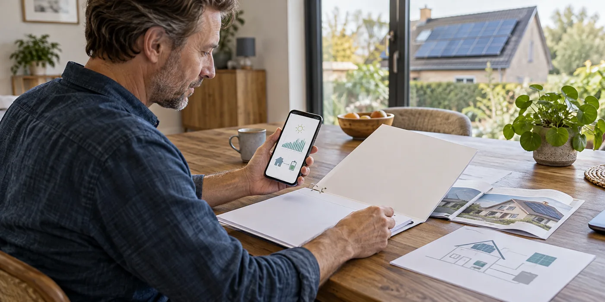

Koppel apparatuur aan documenten
Vraag de identificatie van panelen en omvormer, het legplan en de elektrische schema’s. Controleer of eventuele wijzigingen tijdens de uitvoering verwerkt zijn. Bewaar de productdocumenten bij de factuur. Je hoeft niet zelf de techniek te controleren om wel te kunnen vragen of het dossier de uitgevoerde installatie beschrijft.
Vraag wie keuring en melding opvolgt
Fluvius geeft informatie over keuring en aanmelding van zonnepanelen. Vraag wie de benodigde stukken verzamelt en wie de aanvraag afrondt. Een mondelinge toezegging is minder bruikbaar dan een bevestiging met datum en dossiergegevens. De vereisten kunnen verschillen bij een nieuwe installatie en een wijziging van een bestaande installatie.

Maak het appbeheer van jou
Laat zien hoe je inlogt, welke gegevens je ziet en hoe je hulp vraagt. Bewaar geen account dat uitsluitend onder de naam van de installateur werkt zonder duidelijke afspraken. Vraag wat er gebeurt bij een andere internetverbinding of een toekomstig eigenaarschap. De oplevering is ook een overdracht van beheer, niet alleen van hardware.
Bewaar een lijst van nog ontbrekende stukken
Een document dat later volgt, hoeft niet meteen een probleem te zijn zolang duidelijk is wie het bezorgt en wanneer. Maak een korte lijst van ontbrekende bevestigingen, toegang of schema’s en laat ze afzonderlijk afronden. Vermijd dat je alleen een grote map ontvangt zonder te weten wat elk bestand is. Vraag de installateur de belangrijkste documenten kort te benoemen. Zo wordt het dossier ook bruikbaar voor jou, niet alleen voor de volgende vakman.
Een praktisch voorbeeld
Je ontvangt een werkende app maar geen schema’s. Vraag de documenten alsnog als afzonderlijk opleverpunt. Een productiegrafiek is geen vervanging voor het installatiedossier.
Illustratief scenario, geen klantcase.
Neem dit mee naar je gesprek
- Legplan en actuele schema’s
- Keuring en meldingsbevestiging
- Producten en serienummers
- Eigen monitoringtoegang
Veelgestelde vraag
Bewijst stroomproductie dat alles administratief klaar is?
Nee. Controleer keuring, meldingen en documenten afzonderlijk van de werking.
Bron en achtergrond
Fluvius: officiële of technische achtergrond bij dit onderwerp ↗
Geraadpleegd op 13 oktober 2026. De praktische checklist en het voorbeeld zijn redactionele uitwerkingen. Fabrikantinformatie geldt voor de beschreven producten; ze is geen algemene garantie voor andere systemen.
Wat betekent dit voor jouw woning?
Gebruik de calculator voor een eerste indicatie. Een vakman beoordeelt jouw situatie en bevestigt de uitvoering en definitieve prijs.
Bekijk de zonnepanelencalculator →